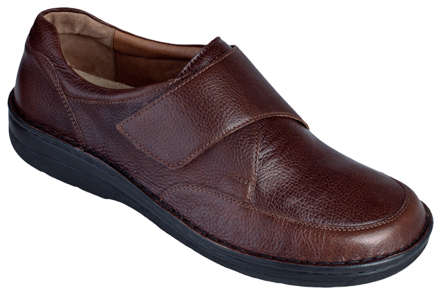

Welcome to ortopediniai batai
Ortopediniai batai - komforto avalynė Vilniuje | pesplanus.lt
2020.10.30 04:32Apie mus Produktai Paslaugos Straipsniai Galerija D.U.K. Kontaktai
DĖMESIO! Mes jau dirbame ir dirbame saugiai !!!
Apie mus Produktai Paslaugos Straipsniai Galerija D.U.K. Kontaktai 0 Krepšelis tuščias!
Apsilankykite
Mūsų parduotuvės Vilniuje
Paskambinkite mums
+370 685 60010
Parašykite mums
info@pesplanus.lt
Registracija internetu
Ortopedinė avalynė
Pradžia Produktai Ortopedinė avalynėSkauda pėdas? – verta sunerimti
Pastebėjus, kad vaikas pėdas stato neteisingai ar skundžiasi kojų skausmu, rekomenduojama nelaukti, kol problema įsisenės ir situaciją taps sunku pakeisti, – turite kreiptis į ortopedą bei vaikui atlikti pėdų tyrimą. Minėti simptomai gali signalizuoti apie deformacijas: šleivapėdystę, plokščiapėdystę ir kitus sutrikimus, kuriuos reikia gydyti. Jei vaikas tikrai turi problemų su pėdutėmis, tikėtina, kad ortopedas jam rekomenduos avėti ortopedinę avalynę.
„Pes Planus“ klinikoje rasite kokybišką ortopedinę avalynę vaikams ir itin populiarią, žinomų prekių ženklų komforto avalynę vyrams bei moterims.
Ortopediniai batai vaikams Komforto avalynė Specializuota avalynė Avalynės priežiūros priemonės
Atviros šlepetės (baltos)
110.00€ ĮsigytiAtviros šlepetės (juodos)
110.00€ ĮsigytiKomforto šlepetės
104.00€ ĮsigytiAtviros komforto šlepetės
110.00€ ĮsigytiMoteriškos komforto basutės
116.00€ ĮsigytiKomforto basutės moterims
116.00€ ĮsigytiKomforto basutės
116.00€ ĮsigytiKomforto basutės (pilkos)
122.00€ ĮsigytiLedo spalvos komforto basutės
122.00€ ĮsigytiRaudonos komforto šlepetės moterims
122.00€ ĮsigytiMargos uždaros komforto šlepetės
110.00€ ĮsigytiRaudonos komforto basutės
126.00€ ĮsigytiAtviros šlepetės
104.00€ ĮsigytiŠviesiai rudos atviros šlepetės
104.00€ ĮsigytiAtviros moteriškos šlepetės
104.00€ Įsigyti Start Ankstesnis 1 2 3 4 5 6 7 8 9 10 Kitas PabaigaOrtopediniai komforto batai puikiai tinka ne tik turintiems rimtų deformacijų bei sutrikimų, bet ir tiems, kurie greitai pavargsta, skundžiasi pėdų skausmu, dirba įtemptomis sąlygomis, kuomet reikia daug vaikščioti ar stovėti vietoje.
„Pes Planus“ ortopedinės avalynės parduotuvė Vilniuje ir svetainė, kurioje galima pirkti internetu, siūlo kokybiškus ortopedinius bei komforto batus įvairiems sezonams už itin patrauklią kainą, todėl tinkamą avalynę sau čia ras kiekvienas.
Ortopedinė avalynė vaikams
Siūlomos ortopedinės avalynės vaikams asortimentas: pirmieji batukai, žemos ir aukštos atviros basutės, aukšti uždari batukai. Mūsų asortimente esanti ortopedinė avalynė vaikams ne tik atlieka esminę savo funkciją, saugo vaikų pėdutes, suteikia mažiesiems komforto vaikštant, bėgiojant ir užsiimant kitomis veiklomis, bet tokia avalynė yra ir patrauklaus dizaino, gražių spalvų, žaisminga, tad neabejotinai pelnys vaikučių simpatijas ir bus noriai avima. Labai svarbu, kad ortopedinė avalynė vaikams, kaip ir bet kokie kiti batukai, būtų tinkamai parinkta. „Pes Planus“ specialistai visada pasirengę padėti mažiesiems klientams išsirinkti geriausiai jų kojytėms tinkančią avalynę. O esant potrauminėms ar įgimtoms indikacijoms pasiūlys specializuotą avalynę.
Komforto batai suaugusiems
Aktuali ortopedinė avalynė moterims ar ortopedinė avalynė vyrams? Nors „Pes Planus“ neprekiauja ortopedine avalyne suaugusiems, čia rasite itin patogius bei anatominei pėdai pritaikytus komforto batus, kurie yra kur kas tinkamesni vaikščioti nei įprasta avalynė. Avėdami komforto batus pamiršite nuospaudas ir kojų nuovargį, nugaros, sąnarių skausmus net tada, jei per dieną daug laiko tenka stovėti ar vaikščioti. Komforto batai – tobulas pasirinkimas kelionėms, ilgiems pasivaikščiojimams, dirbant stovimą darbą. Jei turite poreikį komforto batus pritaikyti ir gydymui, bus reikalingi ortopediniai avalynės įdėklai – įdėkite juos į batus ir rezultatas bus lyg nešiojant individualią ortopedinę avalynę.
Ortopedinė avalynė internetu ortopedijos klinikoje „Pes Planus“ – labai platus asortimentas, patrauklios kainos, aukščiausia kokybė ir patogus pirkimo procesas.
Judėkime į priekį kartu!
Pes Planus
Registracija internetuKonsultacija telefonu
+370 685 60010
Perkant už 25€ ir daugiau į paštomatą prekes pristatysime NEMOKAMAI!
Ortopediniai vidpadžiai Individualūs ortopediniai vidpadžiai Vidpadžiai sportui Ortopediniai komforto vidpadžiai Ortopediniai vidpadžiai vaikams Silikoniniai - geliniai vidpadžiai Įtvarai Kaklo įtvarai Rankos įtvarai Nugaros (stuburo) įtvarai Kojos įtvarai Individualūs gaminiai Kompresinės kojinės ir rankovės Profilaktinės kompresinės kojinės ir pėdkelnės I kompresinės klasės kojinės ir pėdkelnės II kompresinės klasės kojinės ir pėdkelnės Kompresinės kelioninės kojinės Kompresinės pėdkelnės Kompresinės kojinės vyrams Kompresinės kojinės sportui-Ressox Kompresinės rankovės Nėščiosioms Sportui Individualūs sportiniai vidpadžiai Sportiniai vidpadžiai Sportinės kompresinės kojinės Sportiniai įtvarai rankoms Sportiniai įtvarai kojoms Nugaros įtvarai sportui Ortopedinė avalynė Ortopediniai batai vaikams Komforto avalynė Specializuota avalynė Avalynės priežiūros priemonės Protezai Kosmetiniai veido protezai Rankos protezai Kojų protezai Pėdų priežiūros, apsaugos priemonės Ortopedinės pakulnės Silikoninės pakulnės Odinės pakulnės Kineziterapijos priemonės Masažiniai volai Masažiniai kilimėliai Ortopediniai masažiniai kamuoliukai Ramentai ir lazdelės Prekės keliaujantiems Prekės diabetikams Komforto kojinės diabetikams Vidpadžiai diabetikams Pėdų apsaugos priemonės diabetikams Dovanų kuponas Ortopedinės pagalvėsPristatymas
Atsiskaitymas
Grąžinimas
Perkant už 25€ ir daugiau, į paštomatą prekes pristatysime NEMOKAMAI! Pristatymas visoje Lietuvoje (išskyrus Kuršių Neriją) (3.50€) Pristatymas į Omniva paštomatą (3.80€) Pristatymas į LP EXPRESS siuntų terminalą (3.80€) Pristatymas Lietuvos pašto skyriuje (3.80€) Atsiėmimas parduotuvėje14 dienų prekių grąžinimo garantija.
Daugiau informacijos apie prekių grąžinimą galite rasti Paslaugų teikimo taisyklėse ir sąlygose
0Apsilankykite
Mūsų parduotuvės Vilniuje
Paskambinkite mums
+370 685 60010
Parašykite mums
info@pesplanus.lt
Apie mus
Mes, Pes Planus, įsitikinę, kad kiekvienas žmogus yra unikalus ir todėl mūsų sprendimai pasižymi individualumu ir išskirtinumu. Mūsų sukaupta ilgametė patirtis individualios ortopedijos srityje leidžia mums pasiekti geriausią rezultatą.
Plačiau
Svetainės medis
Apie mus Produktai Paslaugos Straipsniai Galerija D.U.K. KontaktaiMūsų paslaugos
Kompiuterinis stovėsenos, eisenos ir bėgimo tyrimas Individualus bėgimo batelių parinkimas Ortopedo-traumatologo konsultacija Kojų ilgio skirtumo nustatymas Įtvarai Rankos įtvarai Kelio įtvaraiDarbo laikas
Pirmadienis 08:00-17:00 Antradienis 08:00-17:00 Trečiadienis 08:00-17:00 Ketvirtadienis 08:00-17:00 Penktadienis 08:00-16:00 Šeštadienis Nedirbame Sekmadienis Nedirbame
Prekių pirkimo ir grąžinimo sąlygos
© 2020 pesplanus.lt. Visos teisės saugomos. Privatumo politika Tinklapių kūrimas: Svetainiucentras.lt Pradžia Produktai Paslaugos Registracija KontaktaiInformuojame, kad šioje svetainėje naudojami slapukai (angl. cookies)
Sutikdami, paspauskite mygtuką „Sutinku“ arba naršykite toliau. Savo duotą sutikimą bet kada galėsite atšaukti pakeisdami savo interneto naršyklės nustatymus ir ištrindami įrašytus slapukus
Sutinku Plačiau